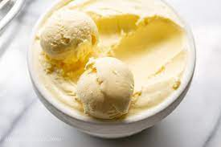

Vanilla Ice Cream

Vanilla ice cream is a classic dessert characterized by its creamy, smooth texture and sweet, aromatic vanilla flavor. It's typically made from a blend of milk, cream, sugar, and vanilla extract. After being churned and frozen, it has a firm yet soft consistency that's perfect for scooping. The light color and subtle flavor make it a versatile choice for pairing with a wide variety of other desserts or toppings.
Ingredients
- 1 cup milk
- 2 cups heavy cream
- 3/4 cup granulated sugar
- 1 tablespoon pure vanilla extract
Steps
- In a medium saucepan, mix milk and sugar together. Heat over medium heat until sugar is fully dissolved.
- Remove from heat and add the heavy cream and vanilla extract.
- Allow the mixture to cool completely. This can be done quickly in an ice bath or slowly in the refrigerator.
- Once cool, churn the mixture in an ice cream maker according to the manufacturer's instructions.
- Once churned, move the ice cream to a container, cover the surface with parchment, seal it, and freeze until solid, typically 4+ hours.
Home